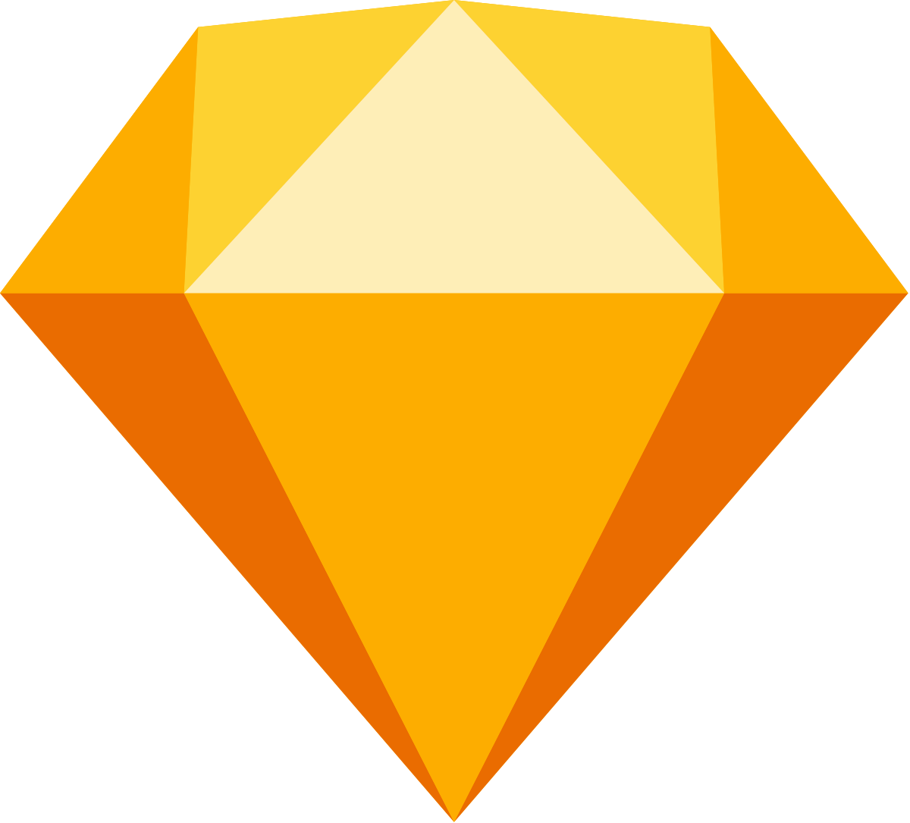

- Veebipõhine programm liidese kujundamiseks
Uppercase vahendid keskenduvad analüüsile ja projekteerimisele. Peamiselt
on Uppercase vahendid kasutusel kasutajanõuete analüüsimisel ja dokumenteerimisel,
kuigi nad on ennekõike mõeldud visualiseerimiseks, erinevate skeemide koostamiseks
ja ka dokumentatsiooni genereerimiseks. Uppercase vahendid toetavad traditsioonilist
diagrammikeelte andmemudelid(andmemudelid, UML-skeemid jne)
Uppercase vahendid mida ma olen varem kasutanud on:
| Vahendi nimi | Lühi kirjeldus |
|---|---|
| Blender |
|
Trello |
|
GoogleMeet |
|
| Vahendi nimi | Lühi kirjeldus |
|---|---|
| Figma |
|
